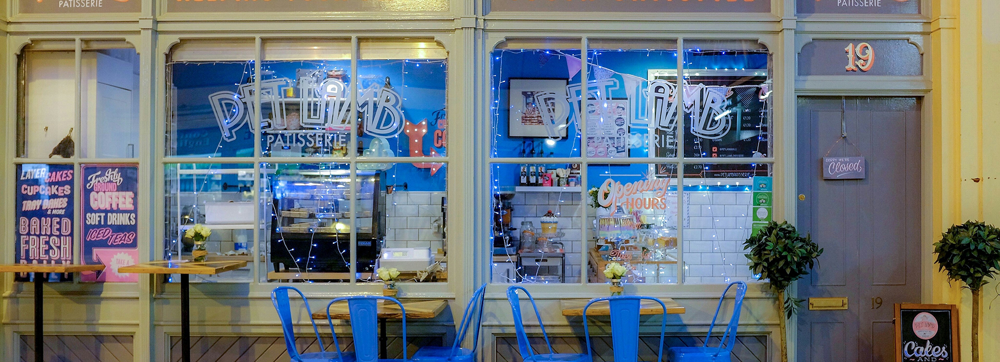

sharing sweet
moments
OFFSET은
디저트를 사랑하는 모든 이들을 위한 특별한 공간입니다.
Crisp warmth, soft sweetness.
바삭한 온기와 부드러운 달콤함이 건네는 다정한 시간

Pause.
Breathe.
Offset.
지친 마음을 부드럽게 리셋하는 작은 순간
오프셋(OFFSET)은 바쁘게 돌아가는 하루 속, 잠시 멈추어 호흡을 고르는 시간입니다.
문을 열고 들어오는 순간 코끝을 맴도는 따뜻한 베이커리 내음과 은은한 커피 향이 긴장된 마음을 부드럽게 풀어줍니다.
바쁘게 쫓기던 생각들은 잠시 내려놓으세요.